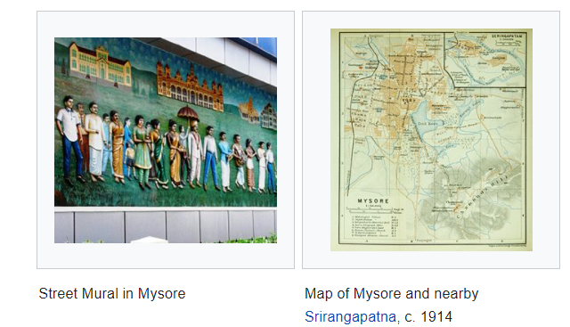

Mysore is one of the major cities of Karnataka and the impressive cultural heritage is the major draw for visitors from all over the world. The erstwhile princely state of Mysore was one of the largest in the British Era and till Indian Independence. The royal history of the land has left behind even better heritage. Among the must visit places in Mysore, the star highlight is the Maharaja Palace. One of the largest palaces in India, it used to be the residence of the Wodeyar Maharaja’s family. Renovated in 1912 the architectural wonder is a blend of Indo-Saracenic style, the mix of Islamic, Hindu, Gothic and Rajput style. Every Sunday, and during the Dussehra celebrations, the palace is lit and looks an impressive sight. Other palaces in the ‘City of Palaces’ are Jayalakshmi Vilas Mansion, Jaganmohan Palace and Lalitha Mahal Palace. Also, to complete a Mysore tour a visit to Tipu Sultan’s Summer Palace and Srirangpatna Fort must not be missed. Located amid pristine beauty of the foothills of Chamundi Hills, the royal city of Mysore is one of the must visit places to witness the Indian legacy. 140 km from Bangalore, in the Southern Indian State of Karnataka, Mysore is the abode of untold grandeur and glory. Moreover, the location at 770m above sea level is the reason for the town to enjoy salubrious weather all through the year. The erstwhile capital of the Wodeyars, the city is known for the magnificent Mysore Palace, admirable architecture, spectacular temples, well-laid gardens, and many more. Mysore tours present a view of the grandeur of the olden times and amazing architecture. Sightseeing in Mysore also cover Mysore Zoo, Brindavan Gardens, Ranganathittu Bird Sanctuary, etc. The beautiful sights are Krishnarajasagara dam (KRS Dam), Lingabudi Lake, Kukkarahalli and Karanji Lake. The popular religious shrines include Sri Ranganathaswamy Temple, Chamundeshwari temple and Chamundi Hills, Jama Masjid of Srirangapatna, St. Philomena's Church and Bylakuppe Buddhist Golden Temple. Additionally, Mysore has a reputation for being the hub of yoga. Sandalwood is a treasure of the land and there are many fascinating monuments carved of the wood. Silk sarees of Mysore are beloved souvenirs. Besides, on your tour enjoy the delightful taste of the South Indian dishes, outing to the nearby places, etc.
|
|
|  | The site where Mysore Palace now stands was occupied by a village named Puragere at the beginning of the 16th century.[21]:281 The Mahishūru Fort was constructed in 1524 by Chamaraja Wodeyar III (1513–1553),[21]:257 who passed on the dominion of Puragere to his son Chamaraja Wodeyar IV (1572–1576). Since the 16th century, the name of Mahishūru has commonly been used to denote the city.[22]:31 The Kingdom of Mysore, governed by the Wodeyar family, initially served as a vassal state of the Vijayanagara Empire. With the decline of the Vijayanagara Empire after the Battle of Talikota in 1565, the Mysore Kingdom gradually achieved independence, and by the time of King Narasaraja Wodeyar (1637) it had become a sovereign state.[23]:228 Seringapatam, near Mysore, the present-day Srirangapatna, was the capital of the kingdom from 1610.[21]:257 The 17th century saw a steady expansion of its territory and, under Narasaraja Wodeyar I and Chikka Devaraja Wodeyar, the kingdom annexed large areas of what is now southern Karnataka and parts of Tamil Nadu, to become a powerful state in the southern Deccan. |